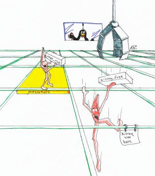

RCU and Unloadable Modules
This means that RCU writers are unaware of the presence of concurrent readers, so that RCU updates to shared data must be undertaken quite carefully, leaving an old version of the data structure in place until all pre-existing readers have finished. These old versions are needed because such readers might hold a reference to them. RCU updates can therefore be rather expensive, and RCU is thus best suited for read-mostly situations.
How can an RCU writer possibly determine when all readers are finished, given that readers might well leave absolutely no trace of their presence? There is a synchronize_rcu() primitive that blocks until all pre-existing readers have completed. An updater wishing to delete an element p from a linked list might do the following, while holding an appropriate lock, of course:
Unloading Modules That Use call_rcu()
But what if p_callback is defined in an unloadable module?

If we unload the module while some RCU callbacks are pending, the CPUs executing these callbacks are going to be severely disappointed when they are later invoked, as fancifully depicted on the right.We could try placing a synchronize_rcu() in the module-exit code path, but this is not sufficient. Although synchronize_rcu() does wait for a grace period to elapse, it does not wait for the callbacks to complete.
One might be tempted to try several back-to-back synchronize_rcu() calls, but this is still not guaranteed to work. If there is a very heavy RCU-callback load, then some of the callbacks might be deferred in order to allow other processing to proceed. Such deferral is required in realtime kernels in order to avoid excessive scheduling latencies.
rcu_barrier()
We instead need the rcu_barrier() primitive. This primitive is similar to synchronize_rcu(), but instead of waiting solely for a grace period to elapse, it also waits for all outstanding RCU callbacks to complete. Pseudo-code using rcu_barrier() is as follows:- Prevent any new RCU callbacks from being posted.
- Execute rcu_barrier().
- Allow the module to be unloaded.
Quick Quiz #2: Why is there no rcu_barrier_bh()?
The rcutorture module makes use of rcu_barrier in its exit function as follows:
Lines 7-50 stop all the kernel tasks associated with the rcutorture module. Therefore, once execution reaches line 53, no more rcutorture RCU callbacks will be posted. The rcu_barrier() call on line 53 waits for any pre-existing callbacks to complete.
Then lines 55-62 print status and do operation-specific cleanup, and then return, permitting the module-unload operation to be completed.
Quick Quiz #3: Is there any other situation where rcu_barrier() might be required?
Your module might have additional complications. For example, if your module invokes call_rcu() from timers, you will need to first cancel all the timers, and only then invoke rcu_barrier() to wait for any remaining RCU callbacks to complete.
Implementing rcu_barrier()
Dipankar Sarma's implementation of rcu_barrier() makes use of the fact that RCU callbacks are never reordered once queued on one of the per-CPU queues. His implementation queues an RCU callback on each of the per-CPU callback queues, and then waits until they have all started executing, at which point, all earlier RCU callbacks are guaranteed to have completed.The code for rcu_barrier() is as follows:
The rcu_barrier_func() runs on each CPU, where it invokes call_rcu() to post an RCU callback, as follows:
The rcu_barrier_callback() function simply atomically decrements the rcu_barrier_cpu_count variable and finalizes the completion when it reaches zero, as follows:
Quick Quiz #4: What happens if CPU 0's rcu_barrier_func() executes immediately (thus incrementing rcu_barrier_cpu_count to the value one), but the other CPU's rcu_barrier_func() invocations are delayed for a full grace period? Couldn't this result in rcu_barrier() returning prematurely?
rcu_barrier() Summary
The rcu_barrier() primitive has seen relatively little use, since most code using RCU is in the core kernel rather than in modules. However, if you are using RCU from an unloadable module, you need to use rcu_barrier() so that your module may be safely unloaded.
Answers to Quick Quizzes
Quick Quiz #1: Why is there no srcu_barrier()?Since there is no call_srcu(), there can be no outstanding SRCU callbacks. Therefore, there is no need to wait for them.
Quick Quiz #2: Why is there no rcu_barrier_bh()?
Because no one has needed it yet. As soon as someone needs to use call_rcu_bh() from within an unloadable module, they will need an rcu_barrier_bh().
Quick Quiz #3: Is there any other situation where rcu_barrier() might be required?
Interestingly enough, rcu_barrier() was not originally implemented for module unloading. Nikita Danilov was using RCU in a filesystem, which resulted in a similar situation at filesystem-unmount time. Dipankar Sarma coded up rcu_barrier() in response, so that Nikita could invoke it during the filesystem-unmount process.
Much later, yours truly hit the RCU module-unload problem when implementing rcutorture, and found that rcu_barrier() solves this problem as well.
Quick Quiz #4: What happens if CPU 0's rcu_barrier_func() executes immediately (thus incrementing rcu_barrier_cpu_count to the value one), but the other CPU's rcu_barrier_func() invocations are delayed for a full grace period? Couldn't this result in rcu_barrier() returning prematurely?
This cannot happen. The reason is that on_each_cpu() has its last argument, the wait flag, set to "1". This flag is passed through to smp_call_function() and further to smp_call_function_on_cpu(), causing this latter to spin until the cross-CPU invocation of rcu_barrier_func() has completed. This by itself would prevent a grace period from completing on non-CONFIG_PREEMPT kernels, since each CPU must undergo a context switch (or other quiescent state) before the grace period can complete. However, this is of no use in CONFIG_PREEMPT kernels.
Therefore, on_each_cpu() disables preemption across its call to smp_call_function() and also across the local call to rcu_barrier_func(). This prevents the local CPU from context switching, again preventing grace periods from completing. This means that all CPUs have executed rcu_barrier_func() before the first rcu_barrier_callback() can possibly execute, in turn preventing rcu_barrier_cpu_count from prematurely reaching zero.
Currently, -rt implementations of RCU keep but a single global queue
for RCU callbacks, and thus do not suffer from this problem.
However, when the -rt RCU eventually does have per-CPU callback
queues, things will have to change.
One simple change is to add an rcu_read_lock() before line 8
of rcu_barrier() and an rcu_read_unlock() after
line 8 of this same function.
If you can think of a better change, please let me know!
| Index entries for this article | |
|---|---|
| Kernel | Read-copy-update |
| GuestArticles | McKenney, Paul E. |
Posted Jan 19, 2007 17:34 UTC (Fri)
by jonabbey (guest, #2736)
[Link] (1 responses)
Posted Jan 19, 2007 22:09 UTC (Fri)
by droundy (guest, #4559)
[Link]
David
Posted Jan 21, 2007 11:04 UTC (Sun)
by ortalo (guest, #4654)
[Link] (2 responses)
Posted Jan 26, 2007 1:00 UTC (Fri)
by PaulMcKenney (✭ supporter ✭, #9624)
[Link] (1 responses)
The rcutorture module is an example of a kernel module that is (more or less) non-malicious, and rcu_barrier() seems to work OK for it.
Please let me know what I am missing!
Posted Jan 26, 2007 21:47 UTC (Fri)
by ortalo (guest, #4654)
[Link]
Bravo for this sort of detailed technical content, folks.RCU and Unloadable Modules
I second that! This is the sort of article that makes me very glad I subscribe to LWN. Of course, reading it a week late wouldn't hurt me, but it's worth contributing something to get articles like this.RCU and Unloadable Modules
Non malicious kernel drivers is probably reasonable; but, IMHO, non-malicious kernel modules is not so (depends on the context).RCU and Unloadable Modules
Certainly malicious kernel modules and drivers could cause arbitrary mischief! But I am curious what added complication you see with non-malicious kernel modules (as opposed to non-malicious kernel drivers.RCU and Unloadable Modules
IIRC I posted the comment erroneously (I wanted to post it on the previous article: "KHB: Recovering Device Drivers: From Sandboxing to Surviving").RCU and Unloadable Modules
Anyway, my idea was that regular device drivers modules are usually associated with hardware management and loaded according to some hardware-related event (possibly kernel-controlled in the first place). So you can build something where such kernel code could be trusted, even if loaded dynamically.
However, with a security orientation, one usually try to refrain from using admnistrator-loadable modules in order to avoid that a successful attack enables the attacker to install kernel level backdoors (nearly impossible to detect).